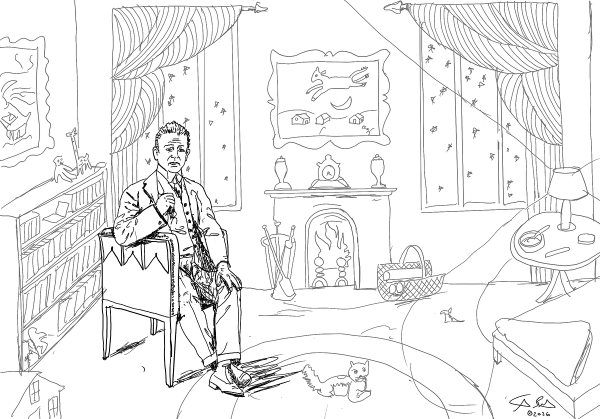

Make rad shit...
- Living
- In Los Feliz, Los Angeles. Out in the surf from El Porto to County Line whenever I can get there.
- Teaching
- At Otis College of Art and Design, the Santa Monica College Interaction Design program, and ArtCenter College of Design. Designing UX/UI curriculum and mentoring student projects.
- Building
- Experimenting with AI coding and tools like Tailwind CSS, React, and Figma MCP, to explore software development with my students.
- Home
- Dad to two awesome kids, Helios (7) and Ophelia (5).
- Open to
- Tinkering with projects that advance UX design and education. If you have one you’d like to talk about, reach out.
This is a /now page, inspired by Derek Sivers (sive.rs) and the directory of /now pages at nownownow.com.

Writing · UX Collective editor’s pick The next larger context Designing beyond the interface, the product, and the prompt. Read on MediumPractice, have fun, and don’t stop
Be a sponge: watch, read, write, make, repeat!
Listen to your users… more!
Calendar page inspired by Massimo Vignelli’s Stendig calendar.
Let’s talk
Have a project, a class, or a team that needs help?
Tell me what you’re working on and I’ll reply within a few business days.